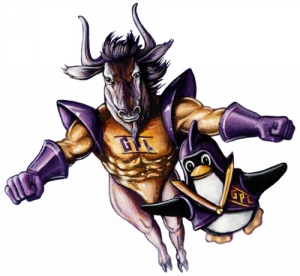

Операционната система GNU

Изтеглите свободни дистрибуции
- Относно операционната система GNU
- Преглед на GNU
- По-подробна история на GNU
- Първоначалното обявление на
проекта
- Манифест на GNU
- Интервю пред списание „БАЙТ“ с Ричард
Столман (1986 г.)
- Моят опит с Лисп и разработката на GNU
Емакс (от Ричард Столман)
- Битката
на един човек за свободен софтуер, статия относно Ричард Столман и
ранните дни на GNU, публикувана от Ню Йорк Таймс на 11 януару
1989 г. Един проблем в тази статия е, че се използва пропагандният термин
„интлектуална собственост“ като нещо състоятелно. Терминът е толкова
объркващ, че да се говори за него няма
смисъл.. Статията съдържа и объркващи факти относно „Симболикс“. Това,
което Столман е вършел, докато е работил за МИТ, е да напише, напълно
независимо, заменими версии на подобренията, които „Симболикс“ са пишели за
тяхната версия на операционната система „Lisp Machine“ на МИТ.
GNU и Линукс
Други ресурси, свързани с GNU